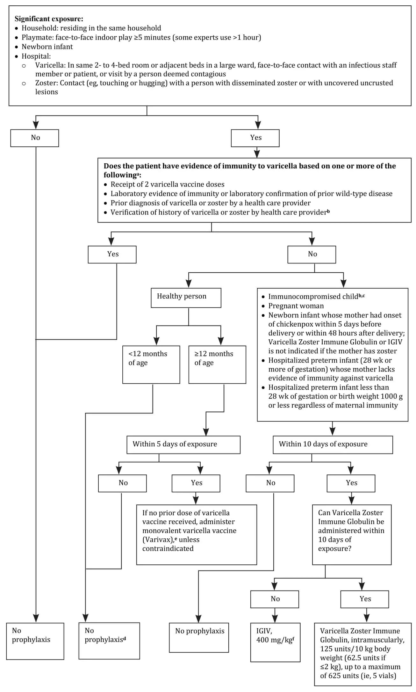
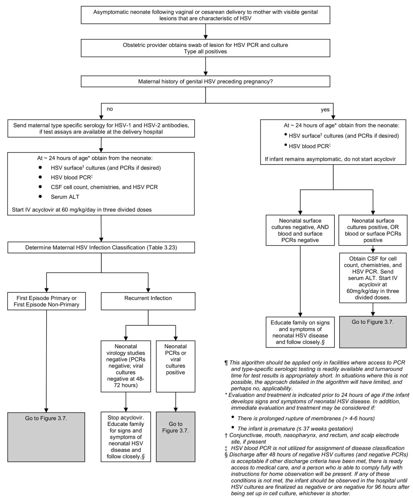
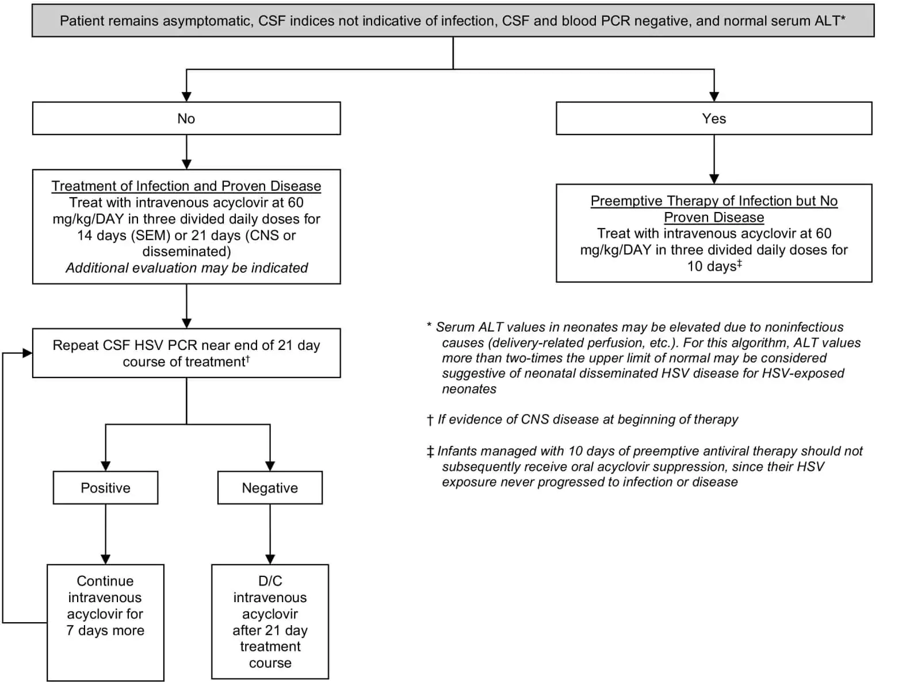

- Standard Precautions:
- For all patients.
- Hand Hygiene.
- For contact with blood or body fluids: gown/ gloves/ mask/ eye protection.
- Airborne Precautions:
- Airborne droplets nuclei (< 5μ in size) containing the infectious agent.
- Hand Hygiene, gown, gloves, mask (N95) and eye protection.
- Droplet Precautions:
- Particle droplets (> 5μ in size) containing microorganisms.
- Transmission requires close distance.
- Hand Hygiene, Mask
- Contact Precautions:
- Direct or indirect contact.
- Hand Hygiene, gloves.
for detailed isolation recommnedations visit:
CDC Isolation Recommendations
| Infection/Condition |
Type of Precaution |
| Chickenpox |
Airborne |
| Measles |
Airborne |
| Tuberculosis |
Airborne |
| Mumps |
Droplet |
| Mycoplasma pneumonia |
Droplet |
| Pertussis |
Droplet |
| Pneumonia |
Droplet |
| Rhinovirus |
Droplet |
| Rubella |
Droplet |
| Influenza |
Droplet |
| Gastroenteritis |
Contact |
| Hepatitis |
Contact |
| Herpes simplex (Mucocutaneous) |
Contact |
| MRSA |
Contact |
| Lice |
Contact |
| Abscess |
Contact |
| Food poisoning |
Standard |
- Exposure groups
- Highest-risk: Household or close family member contacts of a confirmed or
probable case.
- Moderate-risk: Health care personnel with unprotected contact with a
confirmed or probable case.
- Low-risk: Others who have had social contact of a short duration with a
confirmed or probable case in a non-hospital setting (e.g., in a community or workplace environment)
- Oral oseltamivir chemoprophylaxis should be provided to close contacts of a confirmed or probable novel
influenza A case-patient according to risk of exposure.
- In highest-risk exposure groups, chemoprophylaxis should be administered.
- In moderate-risk exposure groups, chemoprophylaxis could be considered.
- In low-risk exposure groups, chemoprophylaxis is not routinely recommended.
- Administration of chemoprophylaxis should begin as soon as possible (within 48
hours) after
the first exposure to the confirmed or probable case.
- The recommended treatment frequency dosing for oral oseltamivir is (one
dose twice daily).
- The recommended duration is 5 or 10 days. 5 for time-limited exposure and 10 for ongoing
exposure
- Chemoprophylaxis is not recommended for infants younger than 3 months, unless the situation is judged
critical, because of limited safety and efficacy data in this age group.
|
Indication and age group
|
Risk category and health status
|
HepA vaccine
|
IG*
|
|
Postexposure prophylaxis
|
|
<12 months
|
Healthy
|
No
|
0.1 mL/kg
|
|
12 months to 40 years
|
Healthy
|
1 dose¶
|
None
|
|
>40 years
|
Healthy
|
1 dose¶
|
0.1 mL/kgΔ
|
|
≥12 months
|
Immunocompromised or chronic liver disease
|
1 dose¶
|
0.1 mL/kg◊
|
|
≥12 months
|
Vaccine contraindicated§
|
No
|
0.1 mL/kg
|
|
Preexposure protection (eg, travel)¥
|
|
<6 months
|
Healthy
|
No
|
0.1 to 0.2 mL/kg‡
|
|
6 to 11 months
|
Healthy
|
1 dose†
|
None
|
|
12 months to 40 years
|
Healthy
|
1 dose**
|
None
|
|
>40 years
|
Healthy
|
1 dose**
|
0.1 to 0.2 mL/kg‡,¶¶
|
|
>6 months
|
Immunocompromised or chronic liver disease
|
1 dose**
|
0.1 to 0.2 mL/kg‡,¶¶
|
|
>6 months
|
Persons who elect not to receive vaccine or for whom vaccine is contraindicated§
|
No
|
0.1 to 0.2 mL/kg‡
|
- HepA: hepatitis A; IG: immune globulin; HAV: hepatitis A virus.
- * Measles, mumps, and rubella vaccine should not be administered for at least 2 weeks before and 6 months
after administration of IG.
- ¶ A second dose of HepA vaccine is not required for postexposure prophylaxis; however, for long-term
immunity, the vaccination series should be completed with a second dose at least 6 months after the first dose.
- Δ The provider's risk assessment should determine the need for IG administration. If the provider's risk
assessment determines that both vaccine and IG are warranted, HepA vaccine and IG should be administered
simultaneously in a different anatomic site (eg, separate limbs).
- ◊ Vaccine and IG should be administered simultaneously in a different anatomic site (eg, separate
limbs).
- § Life-threatening allergic reaction to a previous dose of HepA vaccine or allergy to any vaccine
component.
- ¥ IG should be considered before travel for persons with special risk factors for either HAV infection or
severe disease from HAV infection.
- ‡ 0.1 mL/kg for travel up to 1 month; 0.2 mL/kg for travel up to 2 months, 0.2mL/kg every 2 months for
travel of ≥2 months' duration.
- † This dose should not be counted toward the routine 2-dose series, which should be initiated at age 12
months.
- ** For persons not previously vaccinated with HepA vaccine, administer dose as soon as travel is considered,
and complete series according to routine schedule if the next dose is needed before travel.
- ¶¶ May be administered based on provider's risk assessment.

Evaluation

Treatment

- High risk: chemoprophylaxis recommended (close contacts)
- Household contact
- Child care or preschool contact at any time during 7 days before onset of illness
- Direct exposure to index patient’s secretions through kissing or through sharing toothbrushes or
eating utensils, markers of close social contact, at any time during 7 days before onset of illness
- Mouth-to-mouth resuscitation, unprotected contact during endotracheal intubation at any time from 7 days
before onset of illness to 24 h after initiation of effective antimicrobial therapy
- Frequently slept in same dwelling as index patient during 7 days before onset of illness
- Passengers seated directly next to the index case during airline flights lasting more than 8 hours (gate
to gate), or passengers seated within one seat in any direction from an index case on a flight of any
duration if the index case was coughing or vomiting during the flight
- Low risk: chemoprophylaxis not recommended
- Casual contact: no history of direct exposure to index patient’s oral secretions (eg, school or
work)
- Indirect contact: only contact is with a high-risk contact, no direct contact with the index patient
- Health care personnel without direct exposure to patient’s oral secretions
- In outbreak or cluster
- Chemoprophylaxis for people other than people at high risk (close contacts) should be administered only
after consultation with local public health authorities